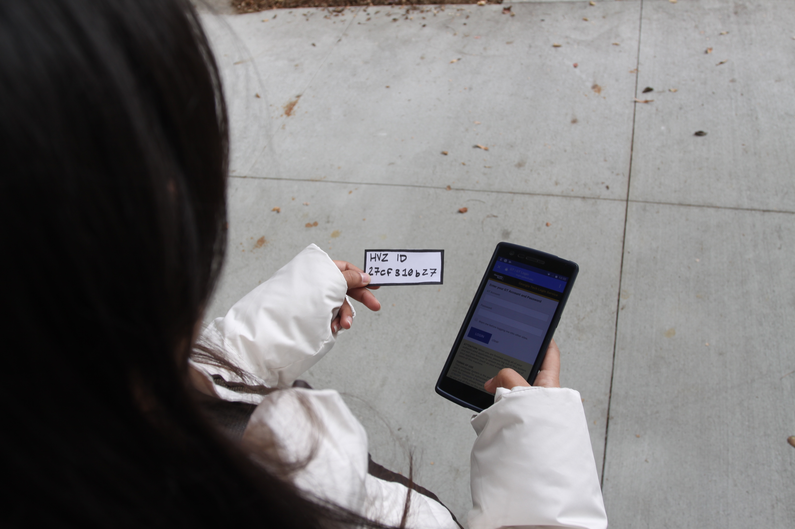

Geo Spatial games such as Pokemon Go and Ingress are all the rage these days. However before these became popular, there were games such as Humans vs Zombies played without the use of technology. We call these Mass Spatial Games. They are identified as games played outdoors with large numbers of people and involves people interacting with other people as well as people interacting with the 3D space.
Humans vs Zombies is one such game played on campuses world wide. It is a free game under the creatve commons license that any person, group or organization can adapt and play on their campus.
The Georgia Tech campus has been conducting this game every semester since 2012. We decided to study this game for our Human Computer Interaction Project.
The scope of this project was to research the gameplay, interactions and overall experience of the players and understand if and where the game was wanting.
We started by interviewing the game administrators (students who run the game) to understand how the game is structured, organized and find out what issues they face while conducting the game.
Major portion of our research was conducted during the game itself. Two members of our team participated in the game while the other two observed from the outside. Most of our research data comprised of ethnographic data collected through interviews. We also collected data by having players fill out pre and post game surveys as well as diary studies for each day of play.
We then created an Affinity Diagram after sorting and coding the data. We created personas to better represent the population of players. This allowed us to focus on specific problems and understand how they impacted each of these user profiles.


The premise of the game was to live in a fantasy world where a virus has attacked the human population that is slowly spreading like an epidemic. A large number of players would choose to turn into a Zombie on the first day in order to play the “more dominant” role. This disrupted the normal play of events that is similar to a zombie appocalypse.
In order to log that a player has been converted into a zombie, players must obtain a Player ID from the newly converted human, sign into the Georgia tech HvZ website and enter this player ID. Many times this process can be time consuming and can remove the player from the experience of the game. This caused a delay in players entering this information which also forced the newly converted human to be removed from the game until his conversion was logged. If players didnt own smart phones or if their phones ran out of battery, this was delayed even further.
We identified that all of these problems compromised the experience of the game and hence increasing immersion had to be our main focus.
We began by splitting off and individually designing solutions addressing problems faced by our various personas. We tried to be as creative as possible without worrying about cost or other limitations only keeping in mind the usability and effectiveness.
We then brought our ideas together and brain stormed on how feasable and useful each of the solutions were. We took into account factors such as form factor, usability, accessibility, cost, technical feasability, etc. We were able to evaluate each of the designs and combine features in such a way that we were able to produce 4 complete and unique solutions that offered various levels of immersion into the game.

We had a peer evaluation session where we displayed each of our four solutions with story boards to depict how they would be used. During the session we had fellow HCI students and faculty vote on each of the designs and give us feedback on each. We also got their thoughts about how immersive it was. It helped that they were also part of the user group.


After evaluating our designs and obtaining feedback on them we zeroed in on our solution: A foot sized device, a kiosk, that will be placed in various locations across the campus that players can interact with in order to perform various tasks. We realised that such a device would not just be more feasable compared to a wearable but also easy to maintain for the game admins. It also eliminates the need for using a mobile phone while playing which provides the most immersive experience compared to the other solutions. By making use of existing artifacts such as college IDs we would be able to make the device usable by everyone without having to put in effort for setting up. Our objective of creating a design like this was to keep its usage to the minimum. Players should be able to complete their tasks in the least amount of time and focus on the game.
We built a working prototype of the kiosk using 3D printed parts, cardboard, a Raspberry Pi, a coin sorter, an RFID reader and a 7 inch touchscreen display. We built the functionality using python scripts and a MySql database to store the player info. We interfaced the RFID reader and the coin sorter machine using the GPIO ports. Finally we added LEDs to provide feedback for the physical parts of the kiosk.


We conducted an initial stage of user testing with our peers at a presentation session where we got expert feedback about the usability of the device from fellow students and teachers in the field of HCI. Our next step of testing would be to conduct the Spring 2017 HvZ game on the Georgia tech campus using this kiosk. We will evaluate the prototype using a pre and post game survey to compare responses from the previous game as well as measure immersiveness using a survey by Jennetta et al [1]. We will measure basic values such as session time, errors, satisfaction, etc. to quantitatively evaluate the effectiveness of our prototype.

[1] Jennett, Charlene, et al. "Measuring and defining the experience of immersion in games." International journal of human-computer studies 66.9 (2008): 641-661.